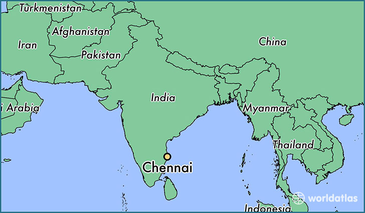

Hi, I was born and raised in Chennai, India. A southern coastal metropolis in India which is known for its cultural landmarks and technically advanced student population. I did my schooling, undergraudate, and masters degree in science in Chennai.
My first stop in the US OF A
I first came to a quaint small University Township for my doctoral degree. Though snmall in szie, Oxford OH
Why did I move to Saint Louis?When I finished my PhD I was looking for change in the model organism in which I did my research. Hence I chose to move to pre-clinical studies from plant model system. Since such changes are generally not pursued, or not appreciated it was a bit hard to obtain a postdoc position.